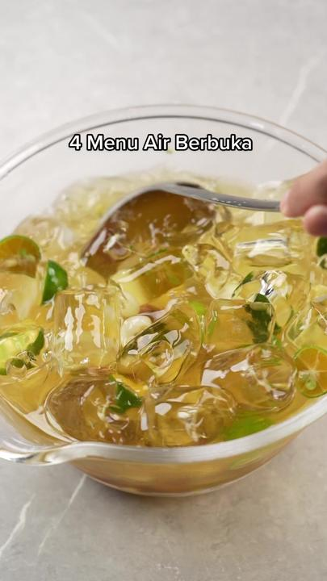
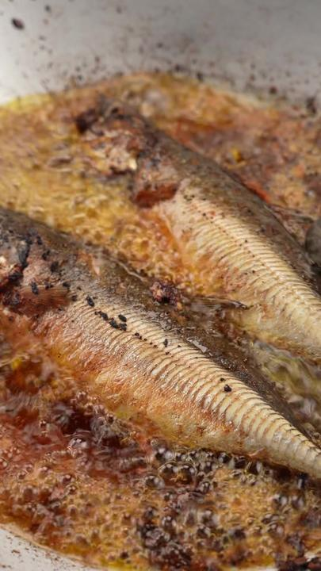
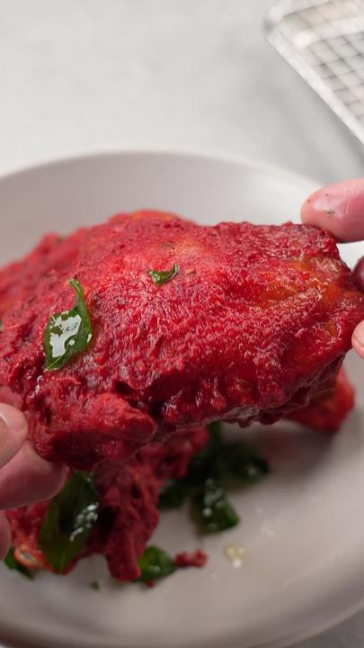

|
 Puasa Ke-1 : 4 Menu Air Berbuka |
 Puasa Ke-2 : Ayam Gepuk |
 Puasa Ke-3 : Cencaru Sumbat Sambal + Sayur Masak Lemak |
|
Puasa Day 4 - Agar-agar buah |
Puasa Ke-5 Part 1: Daging Harimau Menangis |
Puasa Ke-5 Part 2: Soya Ais Campur |
|
 Puasa Ke-6 : Ayam Goreng Mamak |
Puasa Ke-7 : Colek Seafood Celup Tepung |
Puasa ke-8 : Ayam Phat Phet Thai & Sirap Lemon Selasih |
|
Puasa ke-9 : Sambal Hijau Bilis & Telur Dadar |
Puasa ke-10: Sagu Mangga |
Puasa ke-11 : Creamy Tomyam Pasta |
|
Puasa ke-12 : Ketam Masak Lemak Cili Api |
Puasa ke-13 : Ayam Masak Bali |
Puasa ke-14 : Chocolate ala ROYCE |
|
Puasa ke-15: Roti Puri Cicah Sardin Tumis |
Puasa ke-16 : Tom Kha Gai |
Puasa ke-17 : Pisang Custard Butterscotch |
|
Puasa ke-18 : Nasi Goreng Belacan ala Thai |
Puasa ke-19 : Salted Egg Chicken |
Puasa ke-20 : Chicken Alfredo Pasta |
|
Puasa ke-21 : Lontong Kuah Lodeh |
Puasa ke-22 : Cornflakes Madu Biscoff |
Puasa ke-23 : Cadbury Tart |
|
Puasa ke-24 : Daging Dendeng |
Puasa ke-25 : Nasi Tomato & Acar |
Puasa ke-26 : Kek Coklat Kukus |
|
Puasa ke-27 : Rendang 1 Ekor Ayam |
 Puasa ke-28 : Pulut Kuning |
Puasa ke-29 : Popia Simpul & Popia Seaweed |
|
Special : Video Terakhir 30 Hari 30 Resepi |